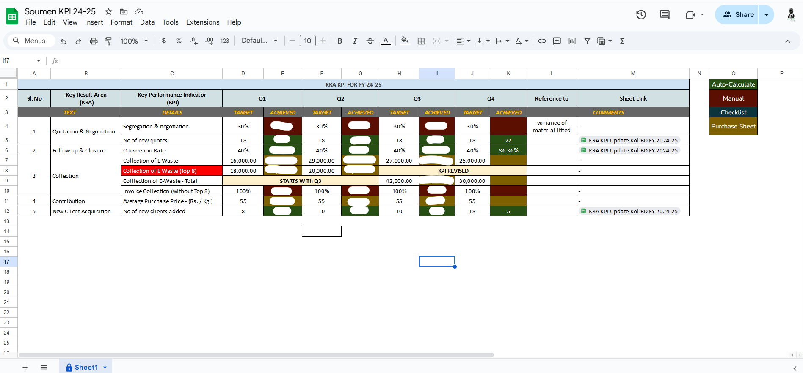

Open the Data Sheet where raw performance data is stored. Eg: Master Data Sheet (Team Axis), Lead Management (MOM), Stock Out (Warehouse), Gross Contribution (BD) etc...
Cross-check data for completeness and correctness.
Open the KPI Sheet (Screenshot given below) and verify information autofetched from Data Sheet . Eg: "Name" KPI 24-25

Enter the required details into the above KPI Sheet accurately.
Eg: Red Cell = Mannual Fill, Green Cell = Auto Fill, Yellow Cell = Mannual Fill (Data from Purchase /Revenue Sheet), Blue Cell = Auto Fill (Checklist Sheet).
In case of mannual filling, if target is in %, kindly fill achievement data with % symbol.
Recheck the values filled in each column and correct any discrepancies before proceeding.
Ensure scores in all parameters are correctly fetched.
Mannualy filled the score in the column towards Self Development
Complete your feedback, comments, and observations in the feedback section.
Recheck, save and submit the sheet
Final Checks:
✔ Verify no fields are left blank.
✔ Confirm feedback is relevant and actionable.
✔ Sheet is Properly Calculated.
✔ Submit the completed sheet on time.